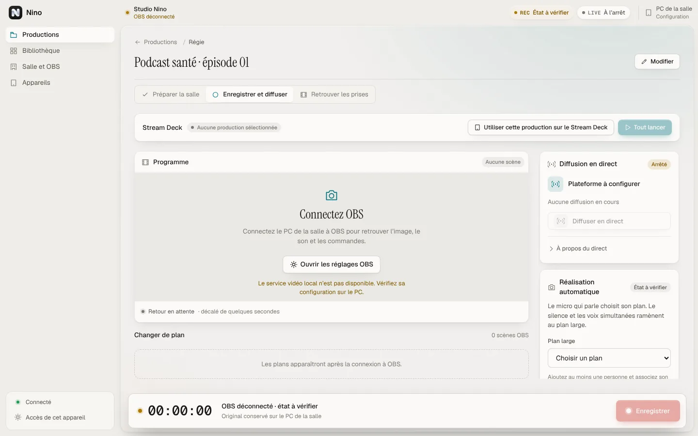
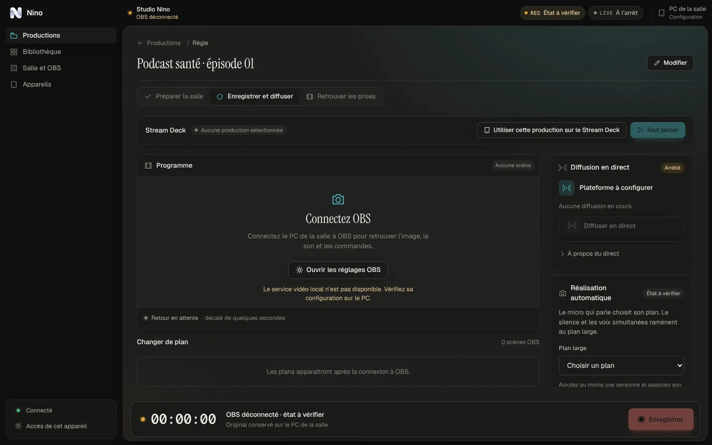

Préparer la salle
Connexion au logiciel de captation, scène de départ, micros, dossier de destination et espace disque : tout est vérifié avant la première prise.
Régie d’autorégie pour studios podcast
Nino transforme le PC de la salle en régie : plans, enregistrement, direct et invités à distance, pilotés depuis le PC, un iPad ou un Stream Deck. Les vidéos restent sur place.


Ce que fait Nino
Connexion au logiciel de captation, scène de départ, micros, dossier de destination et espace disque : tout est vérifié avant la première prise.
Démarrer, mettre en pause, poser des repères, changer de plan. Le direct RTMP part séparément. Le voyant REC suit l’état réel du logiciel, jamais une simulation.
Le micro qui parle choisit son plan. Le silence et les voix simultanées ramènent au plan large. Une commande manuelle reprend toujours la main.
Deux places d’invités : invitation personnelle, salle d’attente, admission, coupure du micro, et un retour sans leur propre voix.
Une seule régie, trois façons de la tenir. La touche « Tout lancer » démarre la prise avec son intro, sa scène et l’automatique.
Relecture sur PC et iPad, copie MP4, et un export prêt pour DaVinci Resolve : originaux, timeline OTIO par prise et repères de montage.
Logiciels compatibles
Chaque salle choisit le sien. Nino le pilote sur le même PC et n’affiche que les commandes qu’il sait vraiment faire.
Le pilote complet : plans, enregistrement avec pause, micros, réalisation automatique, médias à l’antenne et invités à distance.
obs-websocket v5 · OBS 28 ou plus récent
Le moteur de diffusion de la suite PostMelo : plans, enregistrement MP4, direct, retour local et vignettes.
Protocole de la suite v1
En préparation. Il sera proposé une fois essayé sur un vrai PC de salle.
Pas encore disponible
Exportez la configuration d’une salle et importez-la dans la suivante : logiciel, scènes, formats et réglages. Les mots de passe ne sont jamais exportés.
Installer
Un installateur pour Windows 11, qui embarque tout ce qu’il faut et crée le raccourci « Nino + OBS ».
L’installateur n’est pas encore signé : Windows peut afficher « Windows a protégé votre ordinateur ». Cliquez sur « Informations complémentaires », puis « Exécuter quand même ». Les guides illustrés : tutoriel, manuel complet, installation Windows.